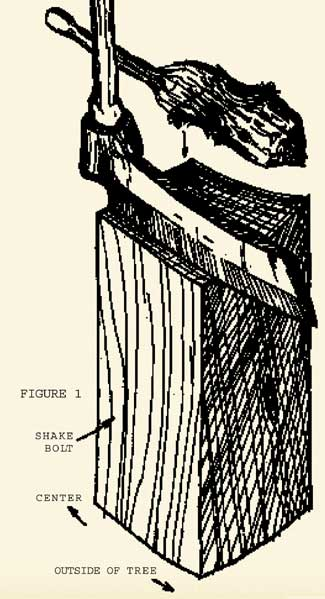
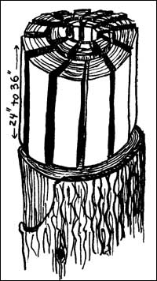

Make Your Own Shingles
With just a mallet, a froe and a few other tools, you can craft wooden shakes for your roof.
By Robert Simonson
February/March 2005
Have you ever admired an old house covered with weathered shakes - those long shingles old-timers split from logs? Well, if you’re reasonably good with tools, you can make the same kind of roofing for your own buildings.
Turning out handmade shakes isn’t difficult - the hard part is finding the right material. As the illustrations show, shakes are cut from blocks of wood (shake bolts) split out of a whole trunk of cedar, sugar pine, redwood, fir or other straight-grained timber.
Not all trees that look straight from the outside actually prove to be so when they’re opened up, however, and you may have to test chunks sawed off a number of trees before you find a trunk that splits well.
Obviously, you should limit this potentially wasteful search to timber that is already down or dead.
When my wife and I need shake material, we go around to areas that have just been logged and ask the crews if we can clean up a little of the mess they’ve left. Usually, the answer is an enthusiastic “yes.” Alternatively, a permit to cut wood in a national forest will get you all the bolts you need.
The tools needed to get shake bolts out of a whole tree are a chain saw (or a two-person crosscut saw), two to three wedges, a small sledgehammer and an axe. After you’ve cut off a 24- to 36-inch length of timber, you stand it on end, tap a straight line across the diameter with a wedge and hammer, and split the chunk in half. Then split off a narrow triangular section from one of the halves and remove the center of the section so the remaining piece - measured at right angles to the rings - matches the width you want for your shingles.
Figure 1 shows the tools you’ll need to split the shakes from the bolts: a froe (a metal wedge 8 inches to 12 inches long, with an “eye” in one end to hold a handle) and a wooden mallet (made of hardwood, with a knot for strength). Froes can sometimes be found in secondhand stores, or ask almost any old farmer - there’s likely one of these outmoded tools lying around.
In a pinch, a froe can be made from a section of a leaf-type automobile spring. Cut the metal, heat it and curl one end in a circle 1 inch to 1½ inches in diameter to take the handle. Sharpen the edge, and you have a shake-making tool.
Try splitting the sample hunk into shakes. If the wood is unsuitable, you’ll have to go on to another log ... but if you’re lucky, the test bolt will split into smooth shingles one-quarter to five-eighths of an inch thick. In that case, go ahead and divide the section into shakes.
To start the froe into the log bolt, as shown in Figure 3, pound the back of the blade several times with the mallet. The thickness of your shake is determined at this point. If you find the shingles are splitting a little too thin - less than a quarter inch - make your next start a bit further from the edge.
When the back of the froe has been driven in level with the end of the bolt, the handle of the tool is either pulled toward you or pushed away (whichever works best). This twisting of the blade opens the split wider, and the froe is then pushed down about 3 to 6 inches. Twist again in the same way, and the shake should pop off the bolt.
The technique really is much simpler than it sounds. After no more than an hour of practice, you’ll get the hang of it. If you keep at the job about two hours a day for three or four days, you’ll realize the shakes are stacking up with little effort. Twenty feet of good, straight timber will yield about 20 “squares” of shakes - a square being enough to cover an area of 100 square feet when the slabs are properly laid.
You can usually split one to two squares in two hours, and a 30-by-40-foot roof requires about 12 squares. This means, at most, two hours of work a day for six to ten days.
Applying the shakes to the roof isn’t hard, either. Most basic carpentry books will explain how to lay wooden shingles, and the method is the same for the homemade kind.
Once you’ve mastered this old-time skill, I’m sure you’ll find it just as satisfying as I do.
This article originally appeared in the November/December 1973 issue of Mother Earth News. Go to Mother’s Amazin’ Archive at www.MotherEarth News.com to find hundreds more fun and money-saving do-it-yourself ideas, or to order Mother’s Archive CD.
|
 Shakes (long shingles split from logs) are cut from bolts of straight-grained timber, such as cedar or redwood. They are easy to make and will give your building a rustic, handcrafted look. |
 |
 |